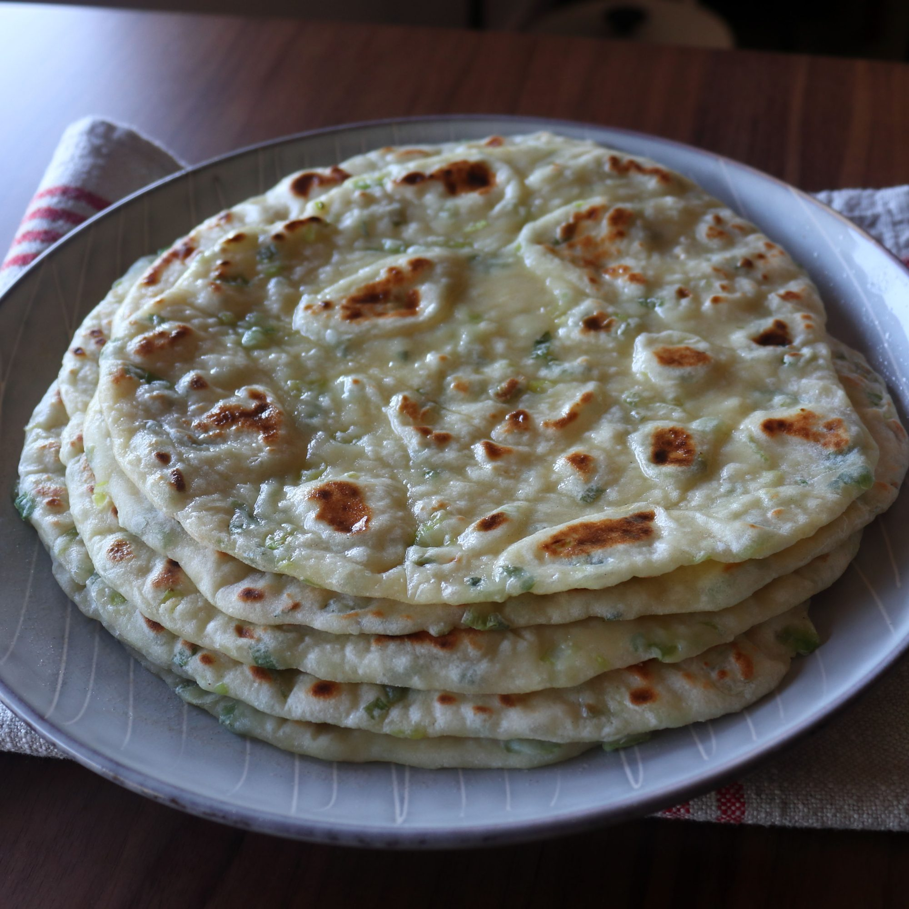

Chapati

Green Onion Garlic Naan bread
I am going to show you how to make naan the Symon style. I want it fast
and I don't want to use yeast and wait for a dough to rise but I also want
it just as good as if I did. While I originally tried this method to save
time, it produces what might be my favorite style of naan. It really is
incredible whether you use garlic and green onions, or not. As naan are
made, they must be stacked and wrapped in a kitchen towel to keep them
soft and supple.
The Naan will involve a preparation time of 20 minutes, a rest time of 15
minutes and a cook time of 3 minutes bringing the total time to 38
minutes. The recipe will yield 6 Naan breads for a serving of 6 people.
Ingredients
- 1½ cups bread flour, plus more as needed
- ½ teaspoon kosher salt
- 2 teaspoons baking powder
- 1 cup plain Greek yogurt
- 4 cloves garlic, crushed
- ½ cup thinly sliced green onions
- 2 tablespoons melted butter
Steps/Directions
-
Place bread flour in a bowl. Add salt and baking powder and give it a
good whisk until evenly combined.
-
Add in Greek yogurt gently, followed by garlic and green onions. Take a
wooden spoon and slowly start mixing everything together. Keep mixing,
stirring, and pressing until a shaggy dough forms.
-
Transfer dough to a work surface and use your hands to press dough
together. Knead for a few minutes until dough becomes elastic and a
little bit sticky. Add a bit more flour as necessary but try to keep
extra flour at an absolute minimum. Knead until dough is a little bit
stretchy, 3 to 5 minutes.
-
Wrap in plastic and allow to rest on the counter for 15 to 20 minutes.
-
Take a bench scraper and cut into 6 equal pieces. Take 1 portion and
roll into a ball. Place onto a generously floured surface. Use a rolling
pin to roll out nice and thin, about 1/8 inch or less. It's ok if the
naan is not a perfect circle. You will need extra flour for rolling out
as the dough is sticky, but try to use as little as possible.
-
Heat a cast iron skillet over medium-high heat until hot. Transfer dough
circles into the hot dry skillet and cook until little bubbles form on
the surface and the underside is lightly browned, about 1 minute. Flip
naan over and cook for 1 more minute. Press down slightly with a spatula
to increase the heat during cooking. Flip over twice more and cook for
an additional 15 seconds per side, but make sure not to overcook to
preserve the texture. Naan should still be flexible when you remove it
from the skillet onto a plate.
-
Cover with a kitchen towel to keep warm and moist while you cook the
other naan breads. Stack all 6 naan breads on top of each other and keep
covered with a kitchen towel.
-
When you are finished cooking all 6 naan breads, unstack breads and
brush the first naan bread on both sides with a little bit of melted
butter. Stack second piece of naan on top and only brush the top side.
Keep stacking and buttering all the naan breads. Fold each naan into a
triangle and serve.